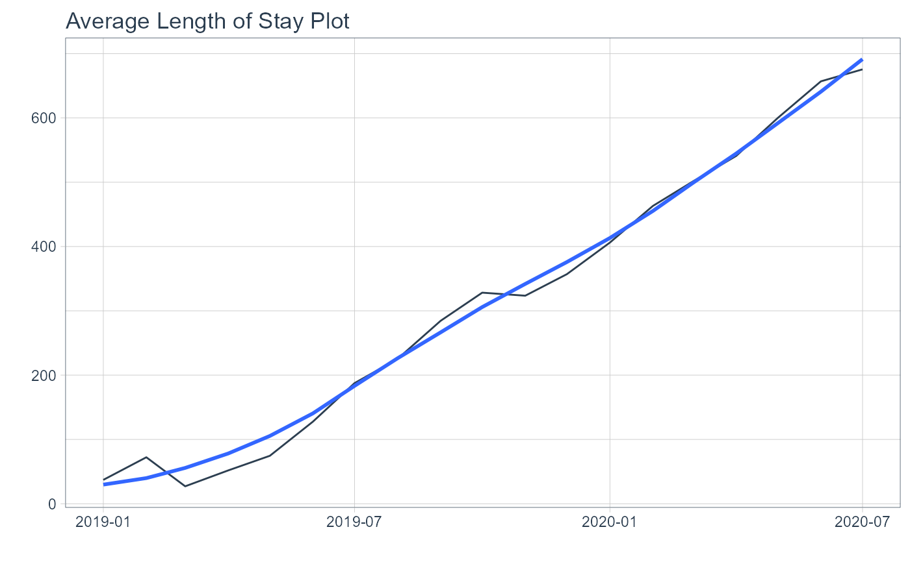

Plot ALOS - Average Length of Stay
ts_alos_plt(.data, .date_col, .value_col, .by_grouping, .interactive)
| .data | The time series data you need to pass |
|---|---|
| .date_col | The date column |
| .value_col | The value column |
| .by_grouping | How you want the data summarized - "sec", "min", "hour", "day", "week", "month", "quarter" or "year" |
| .interactive | TRUE or FALSE. TRUE returns a |
A timetk time series plot
Expects a tibble with a date time column and a value column
Uses timetk for underlying sumarization and plot
If .by_grouping is missing it will default to "day"
A static ggplot2 object is return if the .interactive function is FALSE
otherwise a plotly plot is returned.
Steven P. Sanderson II, MPH
set.seed(123) suppressPackageStartupMessages(library(timetk)) suppressPackageStartupMessages(library(purrr)) suppressPackageStartupMessages(library(dplyr)) # Make A Series of Dates ---- ts_tbl <- tk_make_timeseries( start = "2019-01-01" , by = "day" , length_out = "1 year 6 months" ) # Set Values ---- values <- runif(548, 5, 10) # Make tibble ---- df_tbl <- tibble(x = ts_tbl, y = values) %>% set_names("Date","Values") ts_alos_plt( .data = df_tbl, .date_col = Date, .value_col = Values, .by = "month" , .interactive = FALSE )